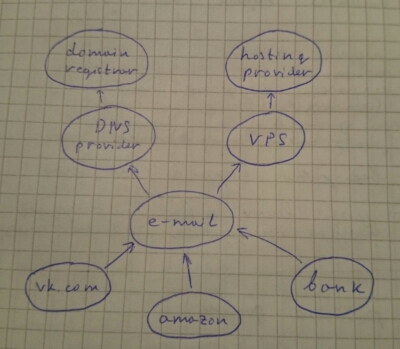

Security dream
Created: 2015-01-28 — modified: 2016-12-14 — tags: security life
I had a dream. A nightmare, actually.
I dreamed that I lost my phone. How bad could it be? I had all important information properly backed up, but the phone was picked up by a hacker.
The phone was protected by "pattern" (to unlock the phone you connect few dots in a 3-by-3 grid). Of course, it was quite easy to pick, just by looking at the dirty screen.
The phone had saved password to my email, so of course hacker got access to it, too.
I usually don't save passwords as emails, but many services let you reset your password by sending you an email with a link. So did my VPS provider.
In the VPS control panel, hacker was able to change root password for the VPS container. Ouch.
VPS had a keyfile to access my home machine. Luckily, it gave hacker only user-level access.
Unluckily, some of scripts in my home directory were referenced from
/etc/cron.daily/and ran by root every day. So the next day, hacker had root access to my home machine, too.And I use this machine for online banking...
Question to the reader: How many security rules did I break? Can you enumerate all of them? A winner will be mentioned on this blog!
Disclaimer:
This was neither a dream, nor happened in reality. Actually it could not ever happen because many of the issues mentioned here didn't exist at the time of writing. Moreover, it will never happen because some of mentioned issues were fixed before I published this.
Please don't steal my phone!
I write this mainly to encourage those readers who has many accounts, to decide which are "strongly protected" (like computer at your home), and which are not (like phones and throw-away accounts on forums), and to check how do they depend on each other.
If somebody breaks into your house and steals your laptop - their access to your facebook account will be, probably, less of your worries. But if to compromise your bank account it's enough just to steal your phone - then probably something's wrong.
I suggest drawing a diagram with all accounts you have, and pointing arrows showing what depends on what. For example, like this:

It shows that to get access to my vk.com account, one needs to get access to my e-mail account first, which he or she can get either by changing DNS records, or accessing VPS where the mail is hosted. Yes, this diagram misses the phone.